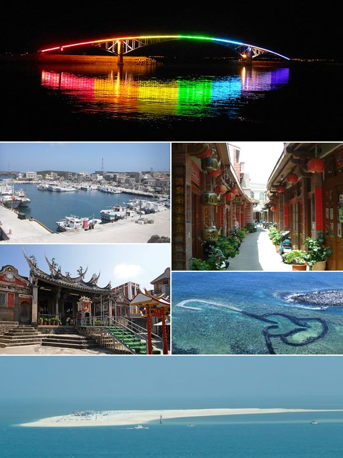

펑후 의용소방 구급분대장 가오후이쥐안, 전국 구급 자원봉사 최우수상
대만 펑후(澎湖) 의용소방 남부 구급분대장 가오후이쥐안(高惠娟)이 전국 구급 자원봉사 최우수상을 받았다. 섬 지역에서 이어온 응급 구조 봉사가 인정받았다.
주유민 기자 · 2026.07.21
橋대만

펑후 의용소방 펑난 구급분대장 가오후이쥐안이 전국 구급 자원봉사 ‘징잉(菁英)상’을 받았다고 대만 자유시보가 전했다. 도서 지역 응급 대응의 헌신이 높이 평가됐다.
광고 문의 · 300×250섬 지역은 의료 접근성이 낮아 응급 상황에서 초기 대응의 중요성이 특히 크다. 자원봉사 구급대원은 병원까지의 공백을 메우며 생명을 지키는 첫 고리 역할을 한다.
이런 봉사는 오랜 훈련과 헌신을 요구한다. 밤낮·날씨를 가리지 않는 출동, 지속적인 응급처치 교육이 뒷받침돼야 하며, 수상은 그 노력에 대한 사회적 인정이다.
도서·산간 지역의 응급 의료 공백을 메우는 일은 개인의 헌신만으로는 한계가 있다. 인력·장비 지원과 제도적 뒷받침이 함께 이뤄질 때 지속 가능성이 커진다.
華橋時報는 이름이 잘 알려지지 않은 곳에서 이웃의 생명을 지키는 이들의 헌신을 기린다. 국적과 지역을 떠나, 위급할 때 도움을 받을 수 있다는 믿음이 공동체를 지탱한다.
출처·참고 (사실 확인용 — 본문은 직접 재작성)
· 自由時報
· 自由時報